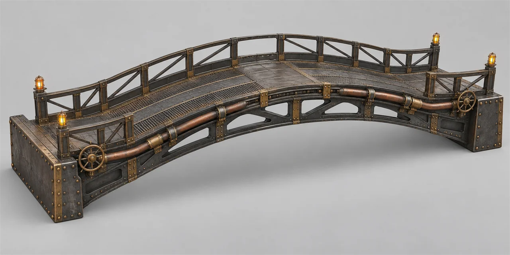
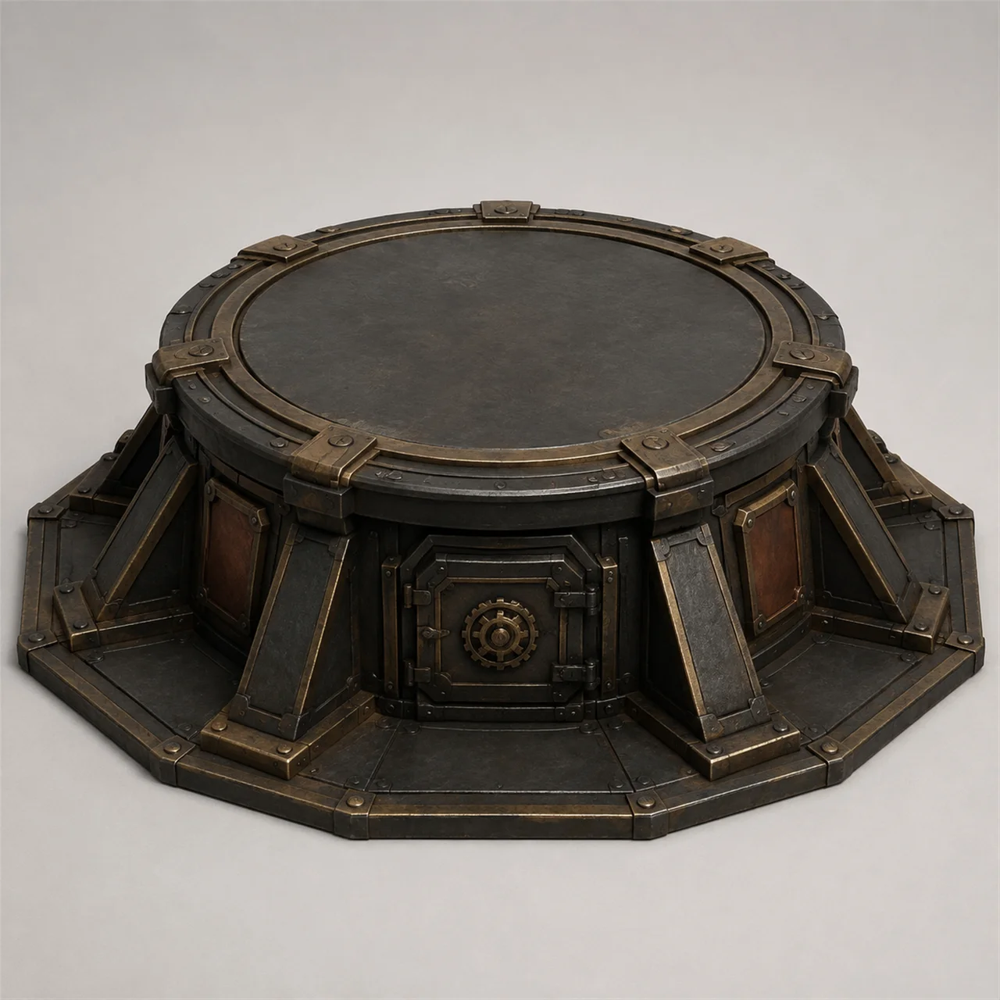
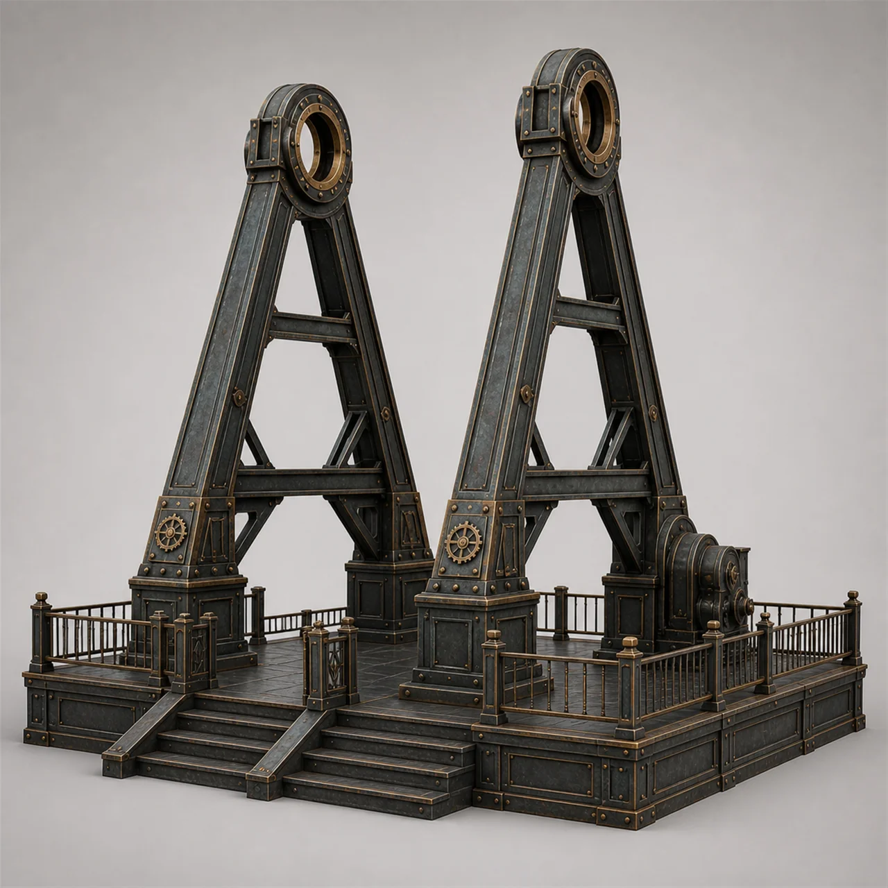
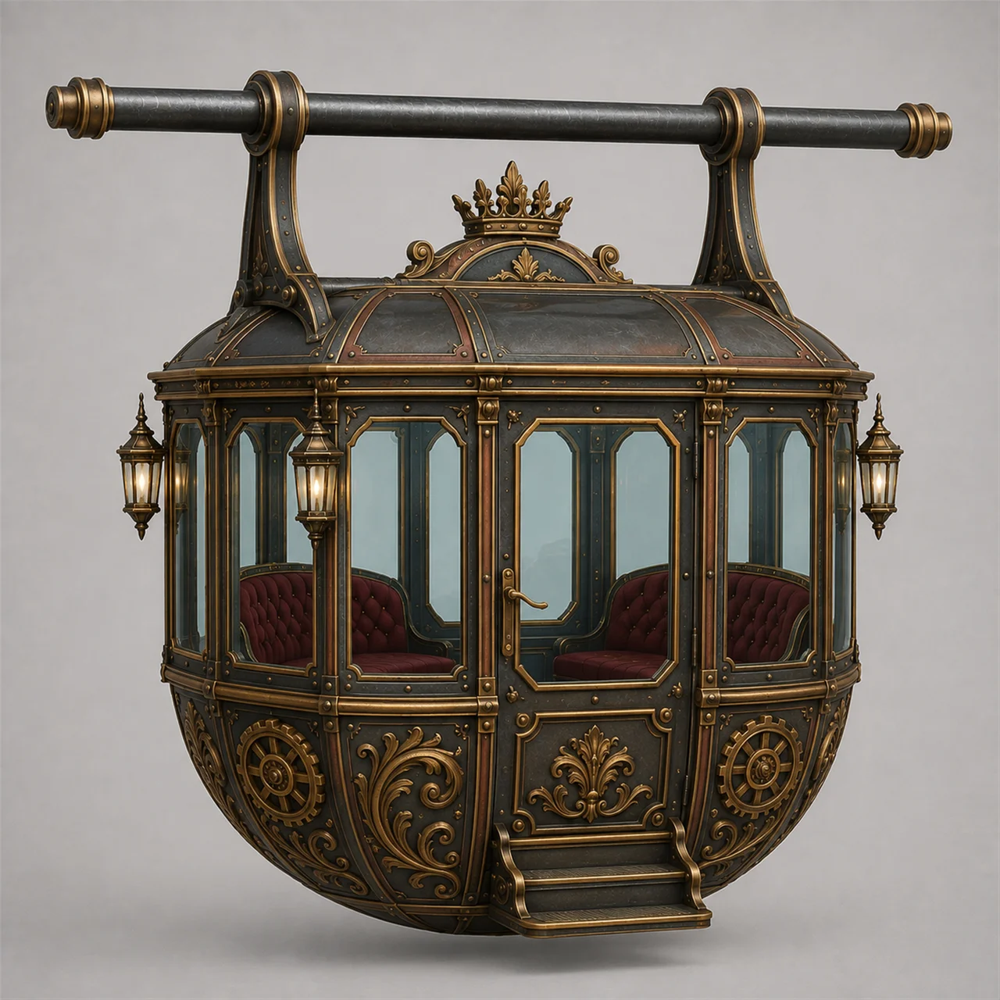
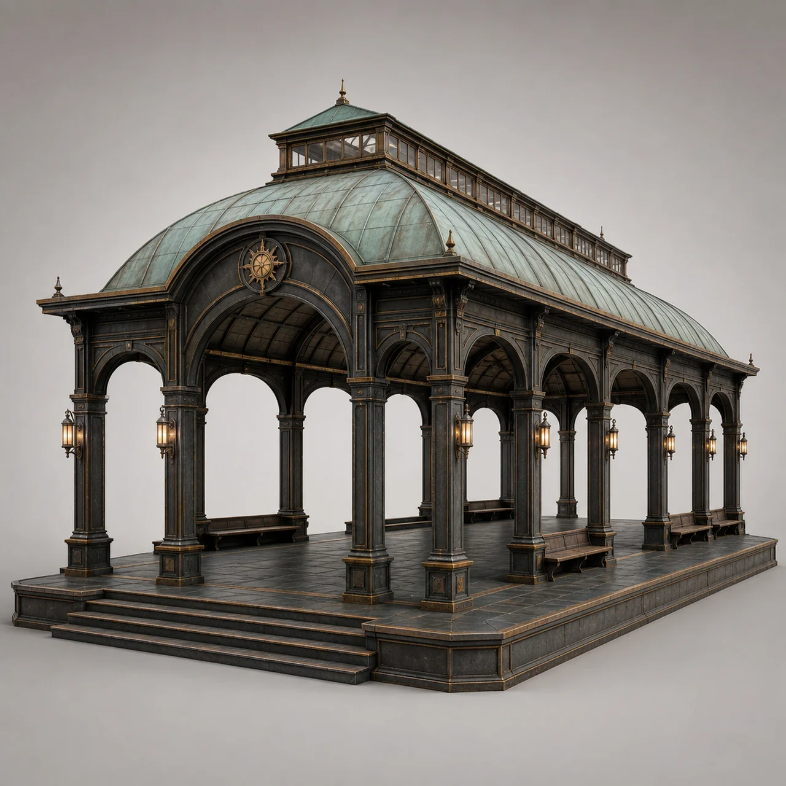
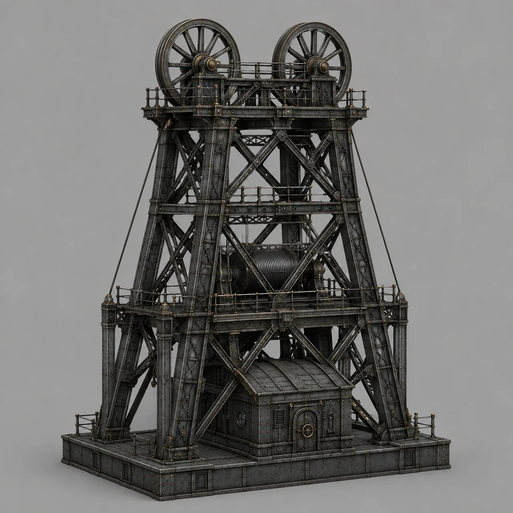
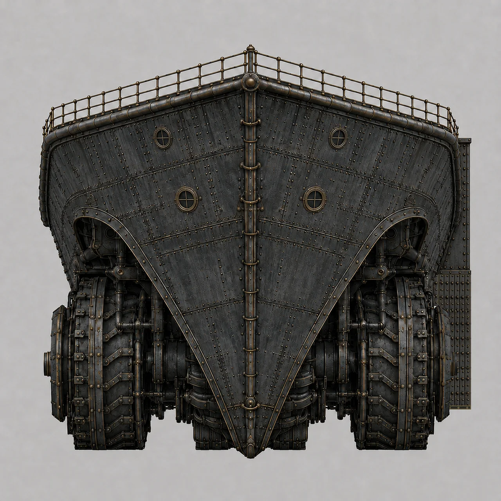

Devlog · Cogworks & Art
Grindwalker isn't one model. It's a kit — bridge segments, mount foundations, a working fairground, industrial towers, and the Arch itself, each built and lit as its own piece before any of it becomes one hull.
Every one of these renders is a real piece from the kit, not a finished scene. That's the actual production method: build the part, get it right in isolation, then assemble the hull from parts that already work. Here's a look at what's actually in the box.
The central span between Grindwalker's twin hulls, and the one piece with no ambiguity about what it's for — this is the same Arch already locked in the class's own spec, the crossing point where the straddle-gap identity actually lives.

One length of the walkways that thread the hull together — lanterns, valve wheels, and a working pipe run built right into the railing.

A weapon mount built as its own standalone piece — drop it wherever the hull needs one, instead of sculpting a bespoke socket every time.
Not every deck on a Strider is armor and machinery. Grindwalker's social side gets an actual working fairground — and the kit pieces show it being built with the same rigor as anything structural.



Where a Starboard resident actually goes to sit down. The same care that goes into an armor plate went into this bench.
Port doesn't get the fairground treatment, and it shouldn't. Its pieces are heavier and rawer — the working half of the hull, built to look like it.

Winding towers, built for a hull that has real extraction work to do, not just a skyline to fill.
Every piece above eventually sits somewhere on this — the actual hull the kit is building toward.

The orthographic reference every piece above gets built against.
A hull this size was never going to get built whole. It gets built piece by piece, until it isn't pieces anymore.
← All Devlog Posts